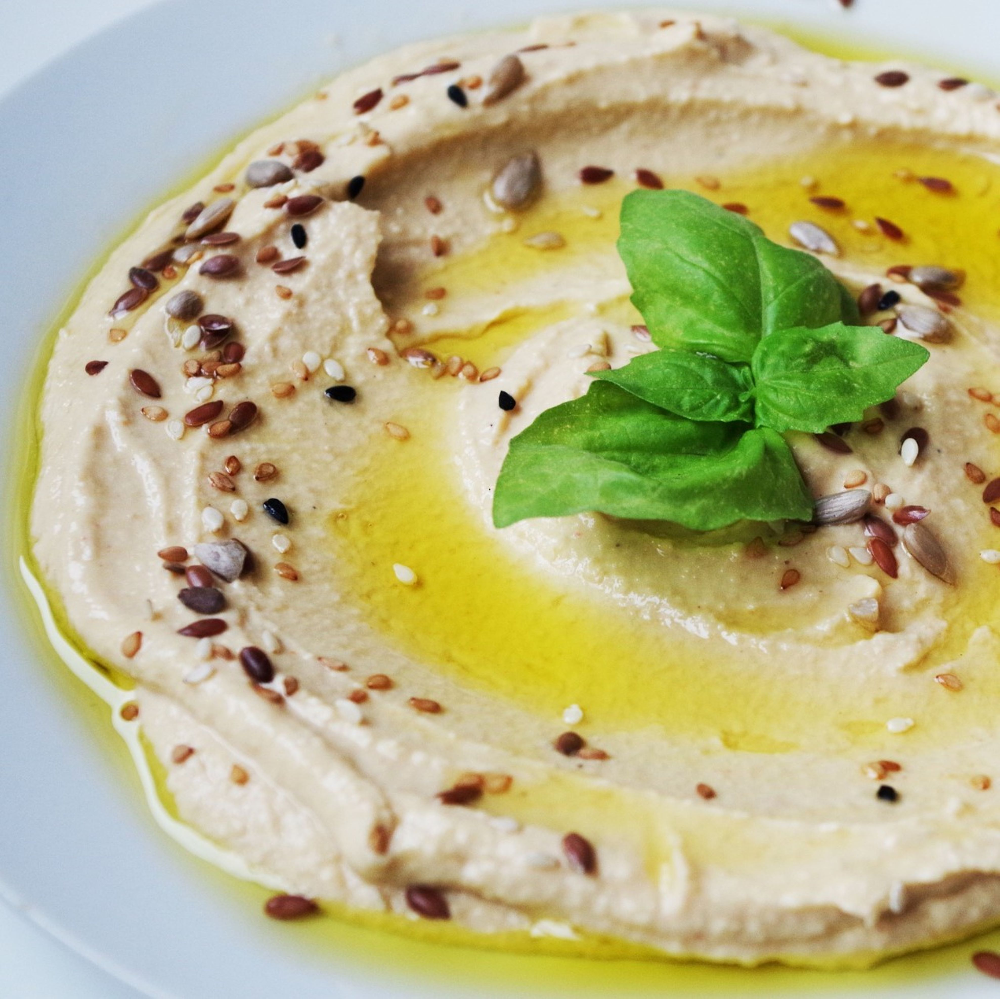
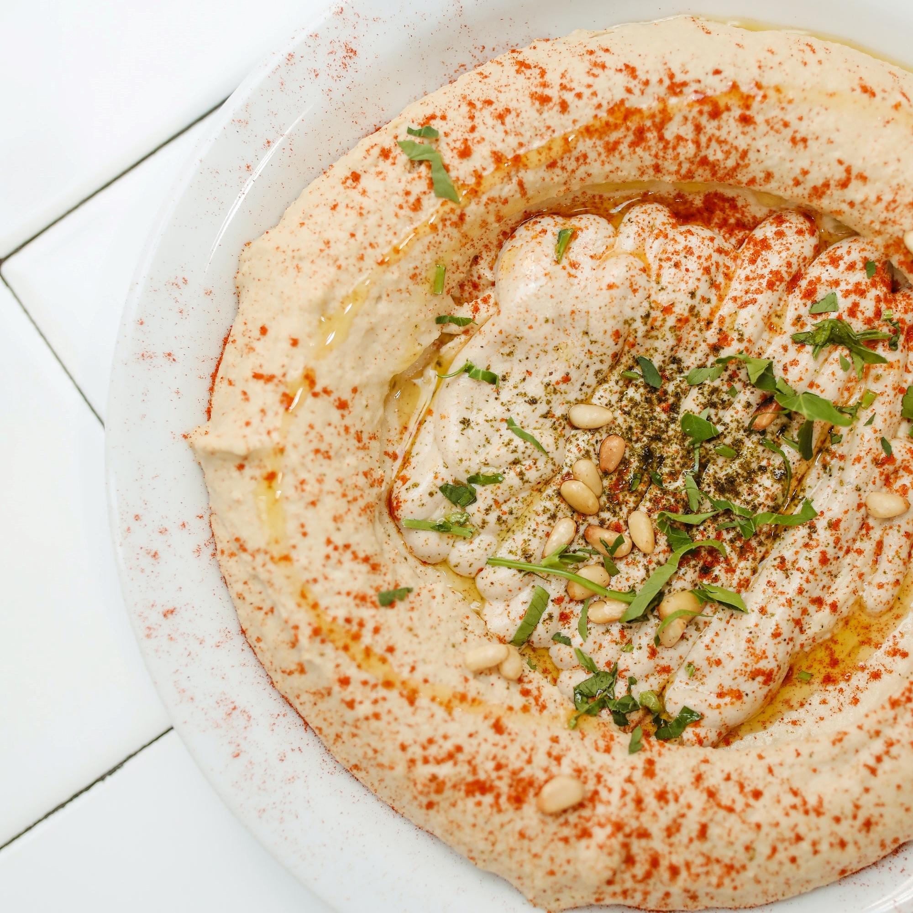

| Hummus | |||
|---|---|---|---|
|
Timp de preparare: 15 minute |
Nivel: incepator |
||
|

 |
||
|
Pasi de preparare: Informatii nutritionale/taco: Calorii: 256 kcal, Carbohidrați: 17.4 g, proteine: 3.5 g, grăsimi: 19.2 g, grăsimi saturate: 15.2 g, sodiu: 400 mg, potasiu: 300 mg, fibre: 0.5 g, zahăr: 9.4 g, vitamina A: 1412 UI, vitamina C: 5 mg, calciu: 7 mg , Fier: 2 mg |
|||